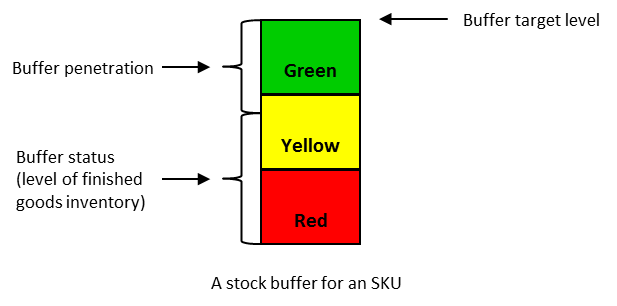

проникновение буфера (buffer penetration) -
1. В изготовленных на заказ барабан-буфер-канат, упрощенном барабане-буфер-канате и цепочке поставок - указание местоположения отверстия во временном буфере.
Использование: проникновение буфера для рабочего задания указывается указанием, в какой области буфера находится отверстие для рабочего задания.
Иллюстрация: заказ на работу еще не присутствует в красной зоне буфера - он проник в красную зону.
2. При производстве до готовности - показатель уровня запасов готовой продукции (сырья и незавершенного производства), не находящегося в буфере, относительно целевого уровня буфера для буфера запасов.
Использование: проникновение буфера для данного конечного предмета является показателем уровня готовой продукции относительно целевого уровня буфера для предмета.
Иллюстрация: если уровень готовой продукции для элемента составляет 60% от целевого уровня буфера, проникновение буфера составляет 40% и, как говорят, находится в желтой зоне буфера.

3. В управлении проектами критической цепи - показатель, используемый для мониторинга статуса проекта. Объем буфера, израсходованный в любой момент времени, выраженный в процентах от общего объема буфера.
Использование: когда задача или цепь задач не завершены и общее время, прошедшее с момента запуска (или выпуска) проекта, больше, чем (совокупное) расчетное время (а), ожидаемое время завершения расширяется или проникает в связанный питатель или буфер проекта. Чем выше процент проникновения буфера, тем меньше остаточная защита для проекта.
Пример: Предположим, что израсходовано 10 из 25 дней буферного фонда проекта. Проникновение буфера составляет 40%, что находится в желтой зоне. Проникновение в желтую зону заставляет распорядителя буфера исследовать ситуацию и, при необходимости, спланировать, какие действия предпринять, если проникновение достигнет красной зоны.
Скорость сжигания буфера используется для оценки того, является ли проникновение буфера достаточно серьезным, чтобы требовать принятия мер.
См .: буфер, скорость сжигания буфера, дыра в буфере, управление буфером, состояние буфера, управление проектами критической цепи, зеленая зона, красная зона, желтая зона
#производство
#ccpm
Синоним: buffer penetration